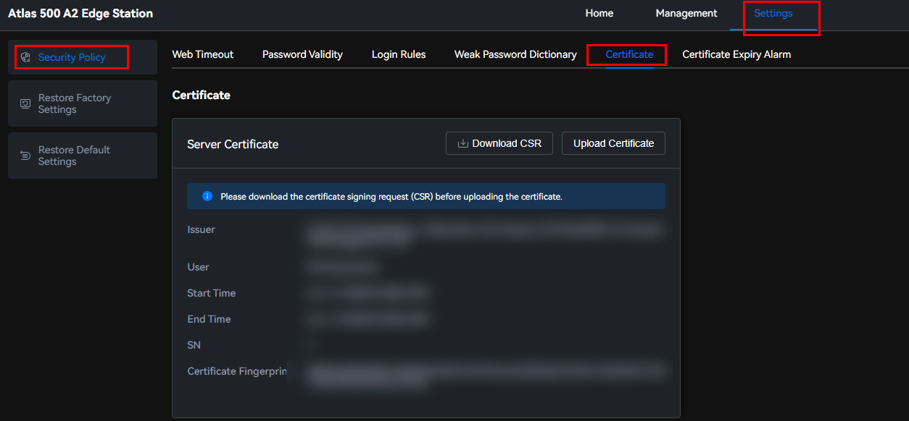

The Atlas IES supports SSL server certificate import, replacement, and information query.
An SSL certificate sets up an SSL security channel over HTTPS between the web browser on a client and a web server so that data can be encrypted and then transmitted between the client and the server, which prevents data disclosure. SSL ensures the security of information transmitted between the two parties. In addition, you can use the server certificate to check whether the website accessed is authentic and reliable. To improve Atlas IES security, you need to import a custom certificate, update the certificate in a timely manner to ensure certificate validity, and import the root certificate to the browser. Otherwise, you may access forged websites, causing user names and passwords to be stolen and affecting the security of the Atlas 500 A2 edge station.
Initial Certificate Declaration
- Huawei initial certificates are used only in the deployment phase, for establishing initial security channels between devices and the customer network. Huawei does not promise or guarantee the security of initial certificates.
- The user shall bear consequences of all security risks and incidents arising from using Huawei initial certificates as service certificates.
- Huawei initial certificates are valid from the manufacturing date until 2041-03-31.
- Services using an initial certificate will be interrupted when the certificate expires.
- Huawei recommends that customers deploy a PKI system to issue certificates for devices on live networks and manage the lifecycle of the certificates. For security purposes, certificates with short validity periods are recommended.
Uploading a Custom Certificate
- Choose .Figure 1 Certificate
 - Before uploading a certificate, click Download CSR.Figure 2 Downloading the CSR

- Click Upload Certificate.Figure 3 Uploading a certificate

- The server certificate is generated by the customer using third-party software. A highly secure encryption algorithm, for example, RSA4096, is recommended for generating the server certificate.
- The certificate file must be in .crt or .cer format and cannot exceed 10 KB.
- The certificate name is a string of 1 to 255 characters, including uppercase and lowercase letters (a to z and A to Z), digits (0 to 9), and other characters (_.-) and excluding two consecutive dots (..). The suffix can only be crt or cer.
- Click
 and select a certificate to be uploaded.Figure 4 Uploading a certificate
and select a certificate to be uploaded.Figure 4 Uploading a certificate
- In the Current User Password text box, enter the password of the current user.
- Click Confirm.
The message "After the certificate is imported, restart the edge station at an appropriate time for the certificate to take effect" is displayed in the upper corner of the page.

After the certificate is uploaded, restart the system for the certificate to take effect.